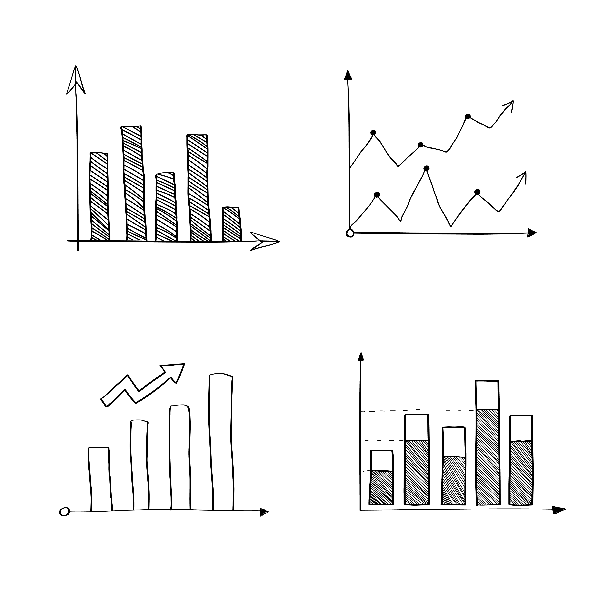

In this project, I cleaned a global layoff dataset by removing duplicates, standardizing data, eliminating null values, and removing unnecessary columns. This process ensured accuracy and consistency, enabling reliable insights from the dataset.

Performed an in-depth exploratory analysis of a global layoff dataset, concentrating on maximum layoff percentages and pinpointing companies and industries with the highest layoffs.
This project analyzed correlations between movie budgets, gross revenue, and other factors. By cleaning the data and using statistical methods, it was found that 'votes' and 'budget' had the highest correlation with gross earnings.
In analyzing a dataset of over 18,000 individuals, I found that higher income levels, professional jobs, gender, marital status, and commute distance significantly influence bike purchases.

This Power BI project analyzes a survey of 630 global data professionals, revealing trends such as data scientists earning the highest salaries, and Python being the most popular language based on the data taken from the survey.